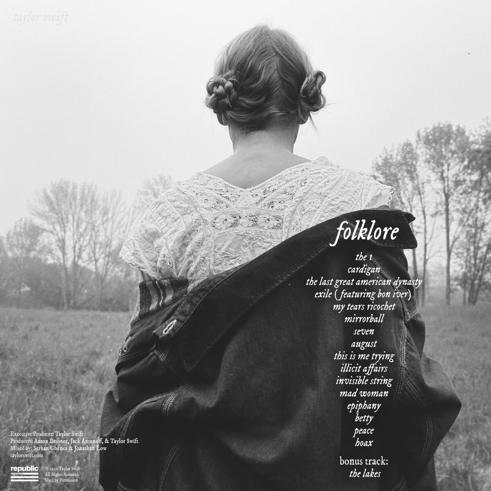

Taylor Swift - Folklore
1. The One [3:30]
2. Cardigan [4:00]
3. The Last Great American Dynasty [3:51]
4. Exile (feat. Bon Iver) [4:46]
5. My Tears Ricochet [4:16]
6. Mirrorball [3:29]
7. Seven [3:29]
8. August [4:22]
9. This Is Me Trying [3:15]
10. Illicit Affairs [3:11]
11. Invisible String [4:13]
12. Mad Woman [3:57]
13. Epiphany [4:50]
14. Betty [4:55]
15. Peace [3:54]
16. Hoax [3:40]
"Folklore" është albumi i tetë i Taylor Swift, i cili u publikua më 24 korrik 2020. Albumi është një ndryshim drastik për Swift, duke u fokusuar në zhanrin indie folk dhe indie pop, në krahasim me rrymat e mëparshme të eksploruara nga artistja Ky album ishte një projekt në bashkëpunim me Aaron Dessner nga grupi The National, si dhe me Jack Antonoff dhe Bon Iver, gjatë periudhës së karantinës.
"Folklore" është një album, versioni orgjinal i së cilës përmban 16 këngë, të cilat janë të mbushura me muzikë melankolike, tekste reflektuese dhe histori emocionuese. Albumi eksploron tematika të ndryshme, duke përfshirë dashurinë, humbjen, nostalgjinë dhe reflektimin mbi jetën."Cardigan" u publikua si kënga e parë e albumit, e cila e prezantoi publikën me rrymën e re muzikore që do të ndiqte kjo vepër e re e këngëtares. Këngë e cila u shoqërua me një video muzikore të regjizuar nga vetë Taylor Swift.

Albumi "Foklore" u prit mjaft mirë nga publiku në mbarëbotën, jo vetëm nga fansat e këngëtares, por gjithashtu edhe nga kritikë të shumtë duke fituar kështu edhe çmime të shumëllojshme, përfshirë titullin "Albumi i Vitit" tek The Grammys.